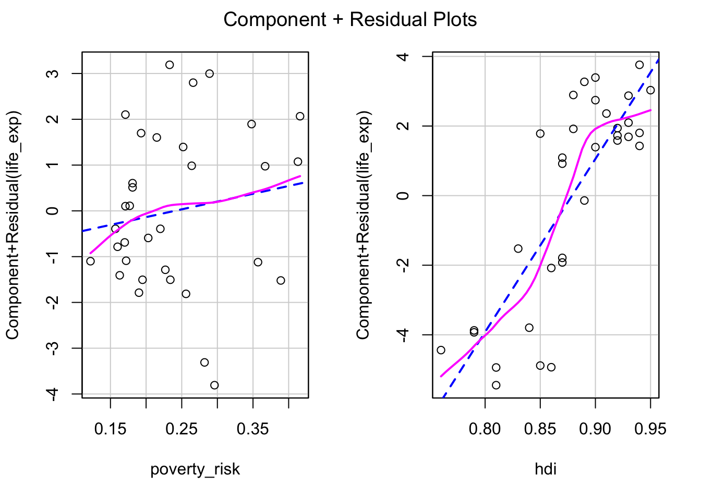

Regression diagnostics
While some regression assumptions, such as validity and representativeness, cannot be checked from the data directly, others can. Namely, the assumptions of linearity, constant variance, normality and the absence of influential observations and additivity should be checked every time they are relevant to a given goal. Note that not every assumption has to be satisfied for every model. For example, constant variance is only needed for hypothesis testing using the classically computed standard error. If our is not inference or if we use robust standard errors, constant variance is not needed to reach a valid conclusion.
Basic regression diagnostics
Basic regression diagnostic involves checking the assumption of linearity, constant variance, normality and absence of influential observations.
Let’s start with creating a regression model predicting life expectancy of European countries by poverty rate and and Human development index:
mod1 = lm(life_exp ~ poverty_risk + hdi, data = countries)For start, we can use the generic plot() function. The plot() function, when applied to a linear model object, produces by default four plots, each useful for checking a different assumption. We will go over all of them.
The assumption of linearity
The assumption of linearity refers to the fact that metric and ratio independent variables should have a linear relationship with the dependent variable. In other words, it should be possible to capture the relationship between variables by using a straight line.
To check this assumption we can plot the residuals of our model against the predicted values of the dependent variable. If the assumption of linearity is fulfilled, the residuals should not exhibit any curvilinear pattern.
Example of A) Linear relationship B) Curvilinear relationship
In the graph above, we can see that when the assumption of linearity is satisfied (plot A), there is no discernible pattern and data points are spread along the horizontal line starting at zero. On the other hand, the data plot B shows noticeable nonlinear pattern.
To plot such diagnostic graph for our model, we can use the base plot() function with argument which = 1:
plot(mod1, which = 1)Notice that the plot() function by default overlays the residual plot with a loess line, to help us discern the relationship between predicted values and residuals. We see that the relationship in our plot is not completely linear, indicating that our model is not correctly specified to capture the relationship between life expectancy, human development index and poverty rate.
The assumption of normality
The second common assumption is the assumption of normality. Linear regression assumes that errors follow the normal distribution. Though we cannot check the distribution of errors,we can check the distribution of residuals and these residuals should ideally be normally distributed.
Arguably the best tool for checking if some data are following a specific theoretical distribution is Quantile-Quantile plot, or Q-Q plot. A Q-Q plot is simply a scatterplot of quantiles coming from the normal distribution on one axis and quantiles of our observed data on the other axis. To use Q-Q plot, we first compute the quantiles of normal distribution with the mean and standard deviation of our observed data. Next we compute the values coresponding to quantiles from out data. Lastly, we compare the values of the theoretical quantiles with the observed ones.
Q-Q plot examples of A) Normally distributed B) non-nonormally distributed data
If our data come from the normal distribution, the Q-Q plot will show a straight line, indicating, indicating that the values of the theoretical quantiles match the values of the observed one. On the other hand, if the distribution of our sample deviates from the normal distribution, the points in our Q-Q plot will deviate from the straight line.
To create Q-Q plot for residuals from our model, we simply use the generic plot() function with an argument which = 2:
plot(mod1, which = 2)
Looking at the Q-Q plot from our model, we can see that our residuals follow the normal distribution quite nicely.
The assumption of constant variance (homoscedasticity)
The standard ordinary least square regression assumes that the variance of residuals is constant across the whole range of the dependent variable. This assumptions allows for a convenient mathematical shortcut when computing standard errors of regression coefficients, and as such is crucial in situations where our goal is statistical inference.
Residuals, that are constant across the entire range of the predicted variable are called homoscedastic. The opposite of homoscedasticity is then heteroscedasticity.
To check if the variance of residuals is constant, we can plot the residuals against the predicted values of the dependent variables. If the assumption of homoscedasticity (and the assumption of linearity) is fulfilled, we will see the residuals equally spaced along the expected value of the Y axis. On the other hand, if the assumption of constant variance is violated, the residuals will be more spread out in some parts of the plot than in the others. It is also common to take a square root of the residuals to “squish” the data points together to make the plot easily interpretable in presence of outliers.
The following plot shows A) homoscedastic residuals and B) heteroscedastic residuals:
Example of A) homoscedastic data B) heteroscedastic data
To create such plot for our model, we can use the plot() function with argument which = 3:
plot(mod1, which = 3)
Notice, that our residuals do not fulfill the assumption of linearity and therefore the expected value of the residuals is not the same at all values of the dependent variable. We are therefore interested if the the residuals of our model are equally spaced along the red loess line. This mostly appear to be true, indicating that the assumption of constant variance is fulfilled.
Absence of influential observations
The last of the basic assumptions of linear regression is the absence of influential observations. Influential observations are those which have an overly large influence on the final form of our model, to the point where they bias our inference and predictions.
To evaluate the influence of our individual observations on the final model, we can use leverage. Leverage tells us how big a role an observation plays when fitting a regression line. More specifically, observations with high leverage are those which lie far away from the center of the data. To understand why, remember that a) the goal of linear is to minimize the (squared) vertical distance between the regression and observed values and b) the regression line will always go through the center of the data, i.e. the mean of all included variables. We can therefore think about fitting the regression line as a children seesaw, with pivot in the middle. From our kindergarten days, we should remember that the further from the pivot we sit on the seesaw, the stronger pull/push we have. In other words, the further we are from the center, the higher our leverage. More formally, leverage can be expressed as (Casella 1983):
\[ leverage_i = \frac{\partial \hat{y_i}}{\partial y_i} = \frac{partial\:change\:in\:expected\:y_i}{partial\:change\:in\:observed\:y_i} \]
Where \(\partial\) can be recognized as partial derivative, \(y_i\) is an observed value of the dependent variable and \(\hat{y_i}\) is a expected value of the dependent variable. As we can see, the bigger effect on the expected value would changing the observed value have, the bigger that observation’s leverage.
However, just because an observation has high leverage does not necessarily mean it will distort our model. What if the observation lied far from the center of the date, but still in line with the general trend? Removing such observations would not affect the model much. Only in the situation where the observation has both high leverage and does not match the trend in our data, will the observation influence the model as a whole.
Plots showing the effect of A) high leverage, low residual B) low leverage, high residual c) high leverage, high residual
We can therefore evaluate the presence of influential observations by plotting leverage against standardized residuals of our model. To do this, we can use the plot() with argument which = 5:
plot(mod1, which = 5)Leverage vs residuals
As we can see the, no observation in our model has both exceedingly high (or exceedingly low) value of standardized residual and also high leverage. We can therefore see no excessively influential observations are present.
The value of residuals and leverage can also be summarized using Cook’s distance (Cook 1977). Cook’s distance of a single observation is a scaled difference between the predicted values of the model including all observations and the predicted values of the model with the specific observation removed. Therefore, observations with high Cook’s distance are those, which has either very high leverage, a very high residual or some combination of both. Formally (Cook 1977):
\[ Cook's\:distance_i=\frac{residual_i^2}{number\:of\:parameters*MSE}*\left[\frac{leverage_i}{(1-leverage_i)^2}\right] \] \(MSE\) here represents the mean square error and the number of parameters is the number of regression terms, including the intercept. Notice that the formula has two parts. The left part deals with residual, while the right one deals with leverage. The number of parameters and the mean square error are constant for all observation and serve only for scaling. Apart from them, notice that there are two ways to get a large value of Cook’s distance. One way is by having large residual, i.e. having large value on the left size of the formula. The other way by having a large leverage.
A plot, showing Cook’s distance for all observations, can be created using the plot() function and including the argument which = 4
plot(mod1, which =4)Cook’s distance of individual observations
While the intuitive meaning of what Cook’s distance represent, it is difficult to select a proper cut off for which observations are influential and which are not. More than dozens of various rules of thumb have been proposed (Chatterjee and Hadi 1986; Cook 1986) with varying complexity, with the most simple and perhaps the most popular being to consider as influential any observation with Cook’s distance higher than 1 (Cook and Weisberg 1982). Others (Fox 2015) suggest the following rule
\[ D_i > \frac{4}{n-k-1} \]
Where n is the number of observations and k is the number of parameters in the model. However, as there is no clearly preferred option and Cook’s distance may sometimes fail to detect influential observations altogether (Kim 2017), perhaps it is simply best to follow the advice of (Fox 1991) and inspect observations which has substantially higher Cook’s distance than the rest.
Displaying basic diagnostic plots
While it is possible to display the diagnostic plots one by one, we can also display them in a compact way in a single pane. To do this, we first use par(mfrow = c(2,2)), to divide the plot pane into 2x2 table. Then, we simply use the plot() on our model object with no other arguments. If we wished to go back to a single graph in a picture, we can use par(mfrow = c(1,1))
par(mfrow = c(2,2))
plot(mod1)
Diagnostic multiplot
par(mfrow = c(1,1))These are the same plots we have seen in the previous part, but composed in a single picture.
Partial residuals plots
The basic residual plot is an useful tool to diagnose the overall fit of the model. However, when more than one numeric predictors is present, it may be difficult to tell which of the variables is the source of non linearity. A potential remedy for this are partial residual plots, known also as the component-residual plots (Fox 2015). These plot show the relationship between predictor and partial residuals of the model, while conditioning (controlling) for all other predictors.
Partial residual plots are not implemented in the base R, but are available in the car package.
library(car)The partial residual plots can be created using the crPlots() function. Note that unlike the basic residual plot, the Y axis in the partial plots is not transformed to have the expected values of residuals be equal to zero. Instead, we are simply expecting the relationship between the predictor and the partial residuals be linear. To help us judge if the assumption of linearity of is met for individual independent variable, the partial residual plots draw two lines lines through the data. The blue dashed line represents linear fit, while the violet full line is a loess line. If the assumption of linearity is met, the violet line should follow the blue one without significant departures.
crPlots(mod1)
In our example, the partial plot for poverty risk show no significant non linearity. The partial plot for Human development index show some mild non linearity in the top right corner. This can inform our decision regarding potential transformation of variable or specifying our model.
Note on using tests to check model assumptions
Some researchers prefer to use statistical tests to judge whether the assumptions of linear regression has been met, rather than rely on diagnostic plots, such as Ghasemi and Zahediasl (2012) . Such tests include Shapiro-Wilk’s test and Kolmogorov-Smirnov’s test for testing normality or Levene’s test for testing the quality of variances. However, use of such tests is not recommended for two reasons.
Firstly, the null hypotheses tested by such tests are highly unrealistic. The normal distribution is a purely theoretical construct, that arises in circumstances not possible in real world, such as in infinity large samples. No real data will follow data the normal distribution and because of that, any test will reject such hypothesis with large enough sample size (Wells and Hintze 2007; Ruxton, Wilkinson, and Neuhäuser 2015). Because of this, some authors argue that normality tests should be used only with small or medium sample, as the tests are “too sensitive” when the sample size is large. However, such advice misunderstands the nature of the problem, as the problem is not with the tests themselves. In fact their performance is consistent no matter the size of the sample. The problem lies in the inherent implausibility of the null hypothesis. While negative results are more likely to occur when the sample size is low, due to the lower power, any and all of these negative results are false negatives by default. This is universally true for every test of normality. Tests of equal variance are somewhat more plausible, as we could for example expect two groups in an experimental study to have same variance, as long they come from the same population and the treatment was assigned at random. Still, there is little reason to expect equal variance in observation studies.
On second, related note, it is not required to fulfill the assumptions of the linear model fully. While the tests and techniques are derived under the assumptions of perfect normality, homoscedasticity and linearity, the models are to some extent robust to deviations and this robustness increases with sample size (Lumley et al. 2002; Rochon, Gondan, and Kieser 2012). Because of this, we do not require the assumptions to be met perfectly, but only to the extend it is necessary in the context of our analysis. In other words, while the assumptions of linear regression can never be met exactly, we only require them to be met be met approximately. What is “approximately” means, depends on the context.
For these reasons, using statistical tests for assessing whether the assumptions of linear regression are met is at best pointless and at worst misleading. Consequently, the use of diagnostic graphs are preferred.